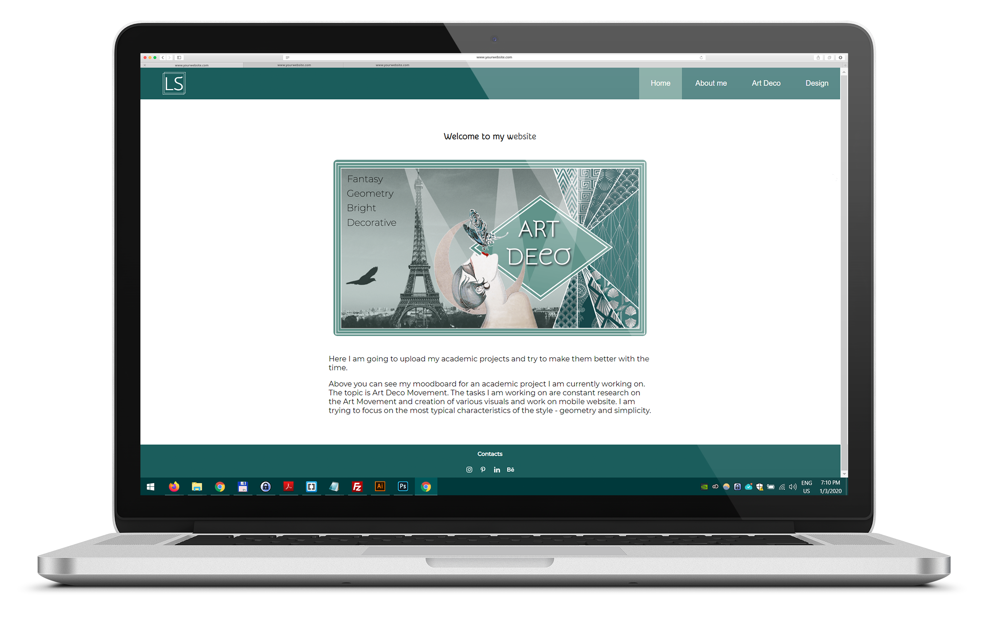

Theme 02: BASIC WEB
In the theme Basic Web I was introduced to some of the basic tools needed in the Multimedia Design field. The theme covered basic web design from research and ideation to design and development for the web. I got my hands on user interface design, digital communication, user testing, and responsive web design. I also learn how to code web pages with html and css as well as basic image processing in Photoshop, vector drawing in Illustrator and prototyping user interfaces and user experiences in Adobe XD.
02.04.01 - Responsive website
Assignment’s focus:
The focus in this assignment is responsive web design. The aim is to to create a website from scratch that works on several platforms from mobile to desktop. The content and the design of the website are inspired by the particular Art style. In my case I am following the design principles of Art Deco.
What I learned:
I learned how to create a moodboard and a style tile, how to choose the right typography and colors. I improved my sketching skills. I aquired basic knowledge on how to create wireframes and how to conduct user testing. When implementing I used media queries and css grid to acheive the responsiveness of a website. I learned how to organize my files better and how to create the right folder structure for websites.
- Website and documentation: